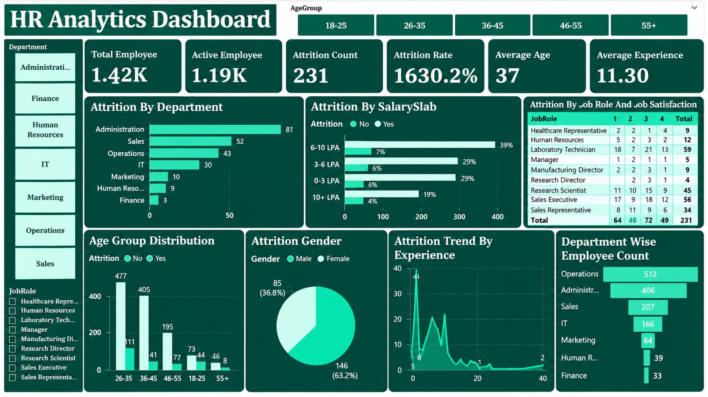

Interactive Power BI Dashboard
View GitHub Repository
Headcount and attrition KPIs with attrition by department, salary slab, job role & job satisfaction, age group, gender and experience. Filter by age group, department and job role.
Out of 1.42K employees, 231 have left, which is about 16.3% attrition, with 1.19K employees still active.
Administration lost the most people (81), but relative to headcount Sales has the highest attrition rate at about 25% (52 of 207), followed by Human Resources at about 23%.
Attrition peaks within the first year or two of experience (44 exits) and drops sharply after about 10 years of experience.
64 of the 231 leavers (about 28%) gave the lowest satisfaction score, and scores 1 and 2 together make up nearly half of all exits.
Laboratory Technician (59), Sales Executive (56) and Research Scientist (45) account for roughly 69% of all attrition.
The 6-10 LPA band holds the largest share of employees, and attrition stays around 15-17% in every slab, so pay band alone does not explain exits.
The 26-35 group is the largest (477 active employees) and also has the highest number of exits (111).
Male employees make up 63.2% (146) of attrition and female employees 36.8% (85).
Build onboarding, mentoring and 6-12 month check-ins, because the first year or two shows the highest exits.
Review workload, targets and growth paths where the attrition rate is highest.
Run regular satisfaction surveys and follow up quickly with employees who score 1 or 2.
Look into working conditions and career progression for Laboratory Technicians, Sales Executives and Research Scientists.